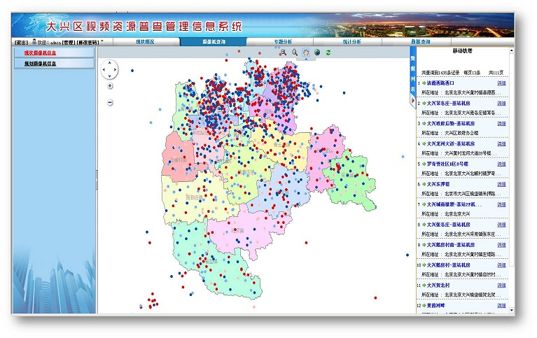
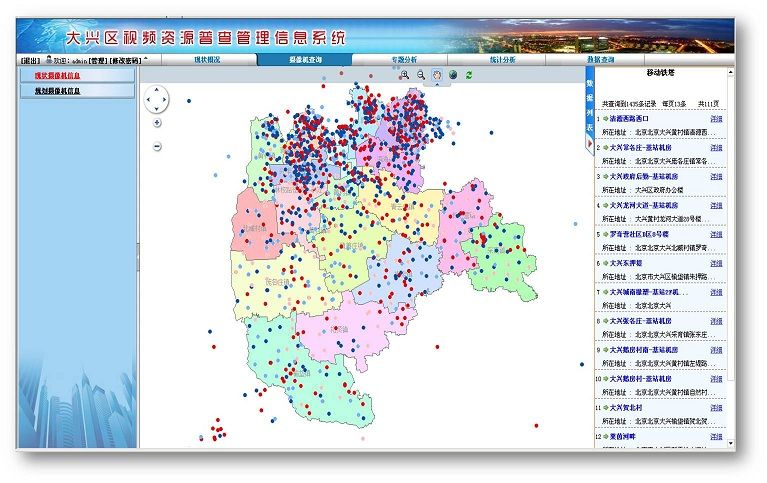
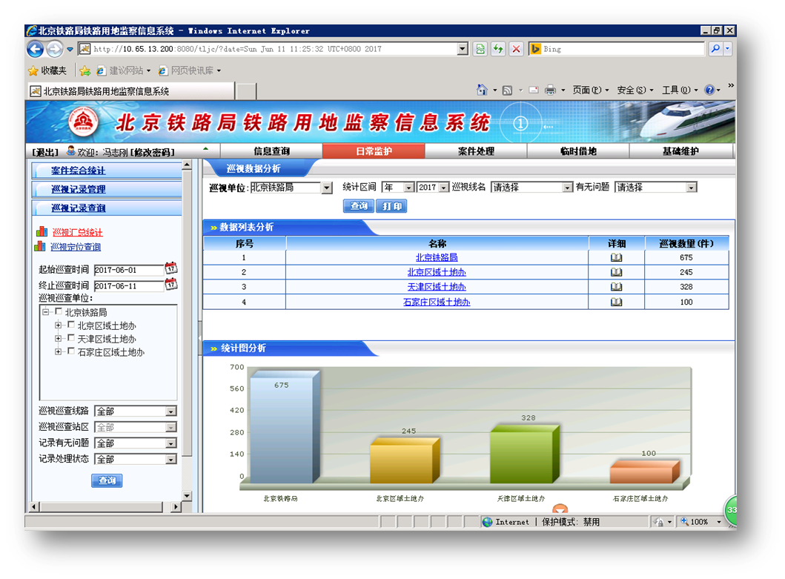
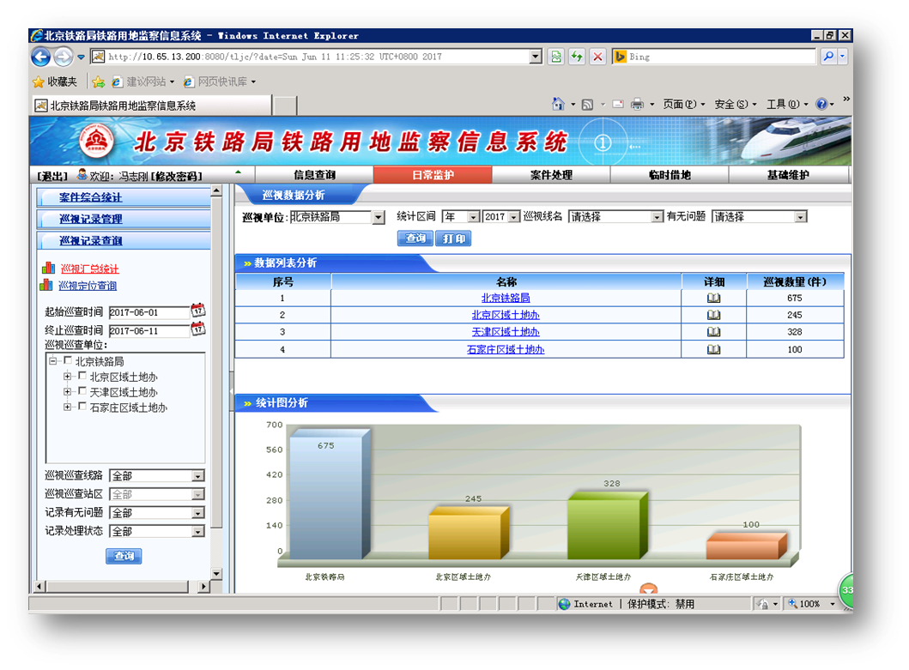
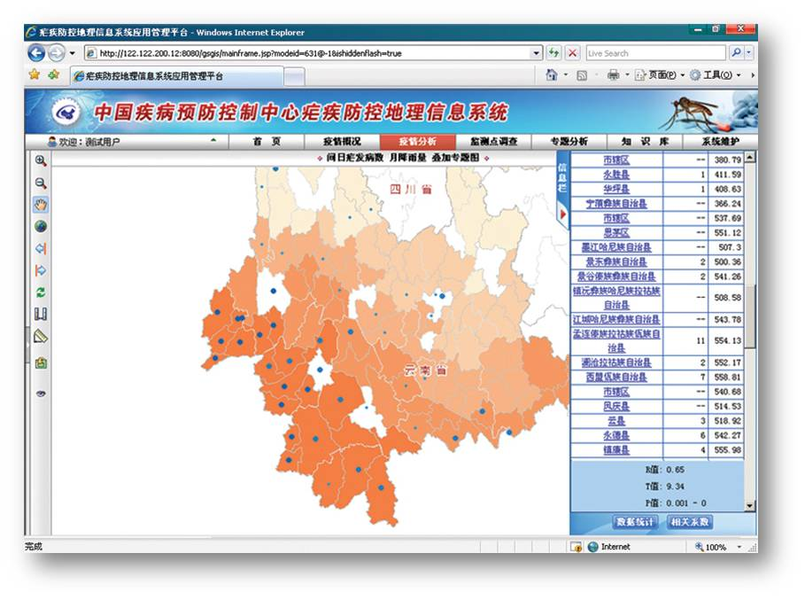
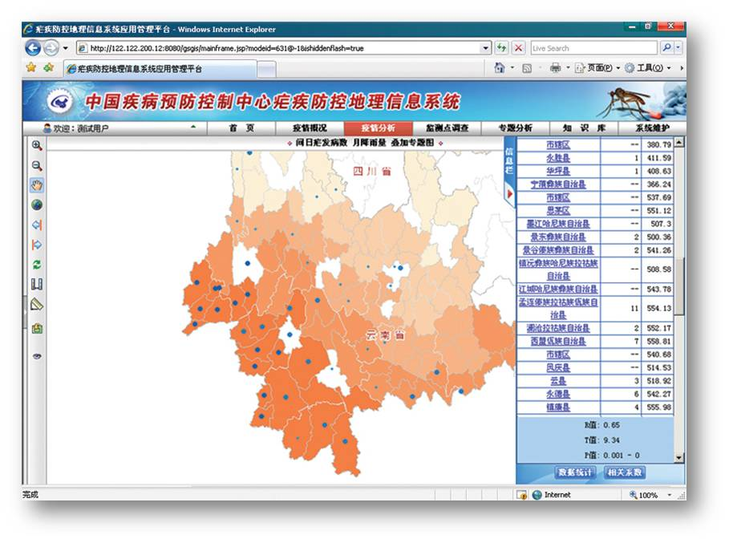

光声新时空在已有的智慧城市中间件平台的基础上，又推出了移动政务中间件平台，可以快速定制出各类包括WEBGIS云后台和手机APP的移动政务应用。其中移动手机app主要负责数据的实时采集，采集属性信息、坐标信息、图片信息等。WEBGIS云后台主要负责数据的统计分析、专题图分析等。目前平台已成功为北京大兴经信委信息中心定制了视频资源采集系统，为铁道部定制了铁路用地监察GIS管理系统，为中国疾控中心定制了疟疾GIS防控系统及鼠疫GIS防控系统。未来该平台也可以为有移动数据采集和移动执法需求的政府各部门快速定制移动政务应用，包括：交通执法、城管执法、文化执法、安监执法、消防执法、税务执法、规划执法、工商执法、路政执法等执法部门提供服务，大大提高了政府各部门应急处理的速度和移动执法的效率。
大兴视频资源普查管理系统


大兴区率先搭建了覆盖全区的视频资源共享平台，平台由视频资源共享APP和大兴区视频资源共享管理信息系统两部分组成，创新运用了移动互联网众包模式，通过移动政务平台定制出视频资源共享APP，在两个多月时间内，共上传全区4924个企业单位及事业机关单位（包括：安监局（101个单位）、城管局（9个单位）、执法队（9个单位）、公安局、交通局等）共计29600多台摄像机数据。
通过视频资源共享APP端，可上传摄像机设备信息、图片信息、共享摄像机安装位置信息，应用操作简单、维护方便、实时上报，使全区摄像机数据快速共享，资源得到高效整合。
大兴区视频资源共享管理信息系统，可对大兴全区上传的摄像机数据，进行分布查询、统计分析和专题分析，在地图页面上能够展现全区摄像机的设备信息、安装位置、运行状态，可查询调用全区任意摄像头的视频资源。可直观统计出摄像机的覆盖率（三级防护区、四级防护区）、高清占有率、联网率 、完好率等，对全区摄像机数据的区域合理规划、摄像机资源共享及管理发挥了重大作用。
 

铁路用地监察GIS管理信息系统


铁路用地移动监察管理平台是基于国内领先的移动政务中间件引擎为北京铁路局搭建的铁路用地移动监察平台，该平台主要包括铁路用地监察WEBGIS云后台和基于智能手机研发的铁路用地监察APP智能终端两部分组成，该平台已经获得了北京路局科技进步一等奖，在国内处于领先水平。
用地监察APP智能终端主要采用智能手机的LBS和移动通讯技术，面向北京铁路局、区域土地办和站段三级共1400多名用地监察人员研制开发了铁路用地监察移动APP，为每个管地监察人员配备土地监察移动终端，即带有GPS卫星定位和拍照功能的智能手机，利用它可以快速搜集和处理违法案件，对铁路线、车站、货场和重点用地违章占地和临时借地进行定期巡查，对侵占铁路用地、危及运输安全的案件和临时借地进行定位、调查、取证和图片等信息，进行实时的数据采集和上报给上级单位，在系统上线运行的两年时间里，共采集了94600多条巡查信息，发现了5200多处违章占地和临时借地案件信息，截止目前已经处理了4900多处违章占地和临时借地案件信息，为国家挽回大量的经济损失。
铁路用地监察WEBGIS后台管理系统主要对北京路局、区域土地办和站段三级监察人员上报的监察数据，进行地理分布查询、统计分析和专题地图分析，提高土地监察效率；系统还提供历史数据的批量导入，巡视数据的补录，采集用户的分布情况和案件的流程处理等；系统对全局各单位的每个土地监察人员的工作情况定期进行业绩考核和后评估，加强铁路用地监察的规范化和制度化，为铁路用地管理提供全新的技术手段，最大限度地维护铁路用地的合法权益。同时将各种违章占地的情况第一时间提交给领导，以便领导进行快速处理和决策。
 

中国疾控中心疟疾GIS防控系统


基于零代码移动政务中间件通用定制平台搭建的疟疾WEBGIS防控管理系统，该系统的主要由疟疾防控WEBGIS地理信息系统和疟疾数据采集移动终端两部分组成，其中疟疾数据采集移动终端是采用智能手机的LBS和移动通讯技术研制开发的疟疾数据移动采集APP，它通过智能手机的卫星定位功能、照相和摄像功能，实时采集疟疾防控监测点和安置点信息，实时采集和跟踪疟疾发病的个案调查、IFA检测、防蚊状况、饵诱捕蚊、按蚊调查等信息。对疟疾疫情和防控情况进行定位、实时监控；疟疾防控地理信息系统，整合地理信息系统空间信息展示及空间分析功能，对疟疾疫情监测、媒介监测和流行病学调查数据进行空间可视化、空间分析、时空分析，科学辅助各地开展疟疾监测防控工作。结合典型研究地区疟疾传播风险预测研究，整合区域疟疾发病、传播媒介、环境因素等多维信息，集成开发疟疾传播风险预测与模拟模块。建立全国县区级疟疾时空分布及传播影响因素分析数据库，为疟疾防控提供基础数据。建立疟疾防控知识库，为疟疾防控实地工作提供信息。引入编码生存期概念，解决跨年度数据资料的整理和可视化；系统完全采用 Web 在线模式， 实时分析疟疾发病与温度、降雨等环境要素之间的关系，为疟疾疫情的早期预警和防控提供辅助的技术支持。
 

中国疾控中心鼠疫GIS防控系统


基于零代码 GIS 通用定制平台搭建的鼠疫GIS防控系平台应用管理软件，系统的主要由鼠疫防控地理信息统和鼠疫疫情监测移动终端两部分组成，其中鼠疫疫情监测移动终端是采用GPS、GIS与网络通信技术，实时采集疫源地和监测点的属性信息和图形信息，还对人间疫情信息进行采集和实时跟踪，另外通过样方法、五米龙法、定点观测、逐日捕鼠、路线方采集宿主信息，同时对已采集宿主身上的媒介数据和洞干蚤巢蚤采集的媒介数据进行分组，大大增强系统数据的实时性和实用性；鼠疫防控地理信息系统主要是对媒介、宿主动物信息，及其检验信息进行管理。基于采集的数据对鼠疫疫情监测，媒介、宿主动物监测、病原体检验、血清学检验和流行病学调查数据进行二维空间可视化展示、统计分析与空间分析，对一些典型地区，结合遥感卫星影像、气象、相关环境和社会学资料，实现鼠疫相关数据的三维空间可视化展示与空间分析等功能，结合二维与三维空间展示与分析，探索我国鼠疫监测与应急处置的新模式，努力提升国家级机构的防治能力。